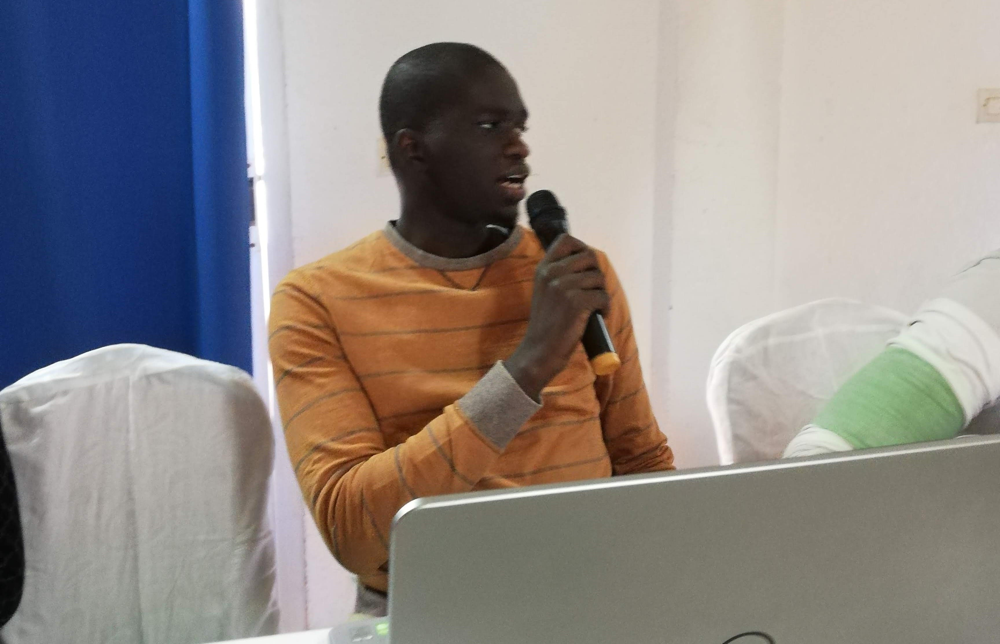

Les ressources humaines sont un pilier capital des systèmes de santé. Dans ce secteur, la maîtrise des effectifs revêt un caractère important car elle permet à l’autorité de prendre les décisions idoines pour une meilleure prise en charge de la santé de la population.
Ainsi, l’ensemble des informations concernant le personnel de santé sont matérialisées sous la forme d’un recueil de données statistiques communément appelé « annuaire statistique des ressources humaine », produit et publié par la Direction des ressources humaines (DRH) du Ministère de la santé et de l’action sociale (MSAS).
L’annuaire statistique des ressources humaines est un document stratégique qui permet d’avoir une visualisation de la cartographie de l’ensemble des catégories socioprofessionnelles (CSP) mises à la disposition des quatorze (14) régions du Sénégal pour répondre à l’offre de soin. Les données sont collectées à l’aide d’un système d’information et de gestion des ressources humaines (SI-GRH) qui facilite l’acquisition d’informations fiables sur les effectifs en ressources humaines. Ces données sont matérialisées sous forme de tableaux et de graphiques ou digrammes montrant la situation des RH de la période concernée et qui feront l’objet d’analyse.
L’utilité de ce document est de permettre non seulement à l’autorité de prendre des décisions en matière de redéploiement et renforcement du personnel qualifié mais aussi aux différents centres de responsabilité de pouvoir mettre en place des stratégies pour l’amélioration du système de santé et à l’accès à des soins de qualité.
En définitif, ce document est indispensable pour une bonne gouvernance des ressources humaines et peut également servir d’outil de plaidoyer auprès des autorités du pays et des bailleurs.

La mobilité est un atout pour l’agent de santé et de l’action sociale et de l’autorité en charge du département. Elle permet à l’agent d’accroître et de valoriser ses compétences, de diversifier son expérience professionnelle et de donner une dynamique à sa carrière. Aussi permet-elle au ministre en charge de la santé d’avoir une base de prise de décision, mais également de disposer de ressources humaines qualifiées sur toute l’étendue du territoire national.
La guide de la mobilité vise à préciser les règles inhérentes au processus de mobilité. Elle s’applique aux fonctionnaires et aux non fonctionnaires du ministère de la santé et de l’action sociale.
Il s’agit notamment de mettre l’accent sur la transparence dans la gestion de la mobilité, en impliquant toutes les parties prenantes particulièrement les partenaires sociaux dans les processus d’affectation, de mutation et de redéploiement du personnel de santé et de l'Action sociale.
L’intérêt de cette implication est de prévenir les frustrations liées aux mouvements d’agents en mettant à la disposition de l’autorité, des informations partagées et validées par toutes les parties prenantes, lui permettant ainsi de prendre des décisions appropriées.
Les Comptes nationaux des Personnels de Santé (CNPS) constituent un système collaboratif d’information sur les Ressources humaines pour la Santé. Ils sont partie intégrante de la Stratégie mondiale sur les Ressources humaines pour la Santé à l’horizon 2030 pour accélérer le progrès vers la Couverture sanitaire Universelle et les Objectifs de Développement Durable, en garantissant l’accès équitable au personnel de santé au sein des systèmes de santé.
Ainsi, les CNPS permettent de fournir des informations sur le profil des ressources humaines, en passant par la production, le déploiement, la répartition, la productivité et la spécification des coûts liés à ces différentes dimensions.
Le rapport des CNPS 2021 est le premier exercice du genre effectué par le Ministère de la Santé et de l’Action sociale (MSAS), à travers la Direction des Ressources humaines. Il a été élaboré en collaboration avec toutes les parties prenantes notamment le Ministère des Forces Armés, le Ministère de l’Enseignement Supérieur, les directions et Cellules du MSAS.
L’Organisation Mondiale de la Santé, à travers ses représentants au Bureau du Sénégal, a permis la réalisation de cet important exercice. Je voudrais les remercier et féliciter l’ensemble des acteurs qui ont contribués à la réalisation de ce rapport.
Le Sénégal a élaboré son second Plan national de Développement des Ressources humaines sanitaire et social (PNDRHSS II) prévu pour la période 2020-2028 s’arrimant ainsi au Plan national de Développement sanitaire et social (PNDSS III 2019-2028) dont il constitue un des plans opérationnels de mise en œuvre.
Pour ce faire, il convient de replacer l’importance de la qualité des données dans le renforcement du système d’information sur les Ressources humaines afin de mieux répondre aux défis liés à la pérennité de programmes sanitaires de qualité.
C’est dans ce cadre, qu’à l’issue de l’atelier préparatoire à l’élaboration du PNDRHSS II, le chronogramme retenu prévoit des activités relatives à la Planification stratégique des effectifs et la disponibilité des RHS sur toute l'étendue du territoire dans la composante Développement des Ressources humaines en santé. Il s’agira de partir des leçons apprises de l’élaboration du premier plan ainsi que des conclusions de l’évaluation finale.
La justification de ce document sur le diagnostic des RHS repose sur les éléments contextuels suivants : i) l’évaluation de la première phase qui a été faite en 2018 ; ii) la Carte sanitaire (CS 2019-2023) ; iii) la Couverture Maladie universelle (CMU) ; iv) le Programme Santé communautaire ; v) l’avènement de l’Acte III de la décentralisation ; vi) une meilleure prise en compte du privé et l’intégration de la dimension sociale.
La cartographie des métiers est la représentation dynamique d'une nomenclature de métiers organisés par familles et sous-familles. Bien que dynamique, il s'agit d'une représentation figée à un instant précis.
L'objectif est d'assurer la disponibilité d’une cartographie unique des métiers de la Santé et de l’Action sociale. Mais également, passer en revue l’ensemble des Catégories socioprofessionnelles existantes, mettre en commun et harmoniser les différentes catégories socio-professionnelles, faire une feuille route pour l’élaboration d’un « Répertoire des métiers de la Santé et de l’Action sociale ».